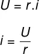

A primeira lei de Ohm determina que a tensão é proporcional à corrente elétrica para uma resistência constante em materiais ôhmicos. Já os dispositivos não ôhmicos não obedecem a essa lei, ainda que sejam calculados pela mesma fórmula que os ôhmicos. O gráfico obtido por meio dessa lei é uma reta inclinada que representa a resistência elétrica e nos mostra que à medida que aumentamos o valor da ddp, a corrente também aumenta.
Resumo sobre a primeira lei de Ohm:
- A primeira lei de Ohm relaciona a tensão elétrica e a corrente elétrica que geram uma resistência elétrica
- A resistência é diretamente proporcional ao potencial, mas inversamente proporcional à corrente.
- A fórmula para o cálculo da primeira lei de Ohm é: resistência igual à diferença de potencial (ddp) dividida pela corrente.
- O gráfico da ddp pela corrente resulta em uma reta diagonalizada que representa a resistência.
- Usamos a primeira lei de Ohm sempre que queremos saber a resistência, a ddp ou a corrente em um circuito.
Formula Da 1ª Lei de Ohm

U – Tensão ou potencial elétrico (V),
r – resistência elétrica,
i – corrente elétrica,
Na lei mostrada na figura acima, chamamos de U a tensão elétrica ou o potencial elétrico. Essa grandeza é escalar e é medida em Volts. A diferença de potencial elétrico entre dois pontos de um circuito, por sua vez, indica que ali existe uma resistência elétrica, como mostra a figura
"2ª lei de Ohm"